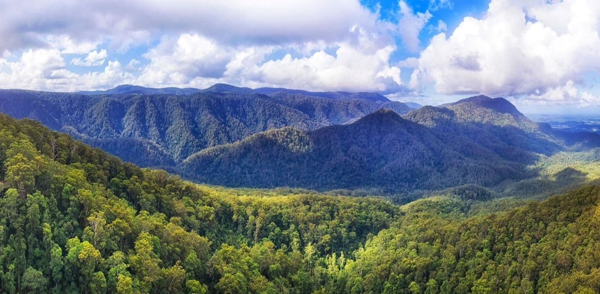

Single Page Website - Environment
Nature
Nature is the living world around us, including plants, animals, and natural features like mountains,
rivers, and forests. It provides us with the resources we need to survive and supports the delicate
balance of life on Earth.
Natural Environment
The natural environment encompasses everything that is not created by humans, including the physical
and biological features of the Earth and the organisms that live there. It is essential to maintain
the health of this environment to preserve the planet's biodiversity and protect it from harm.

City environment
The city environment is the built environment created by humans in urban areas, including buildings,
roads, and other infrastructure. It provides shelter, transportation, and resources for millions of people,
but also affects the natural environment in a variety of ways, both positive and negative.